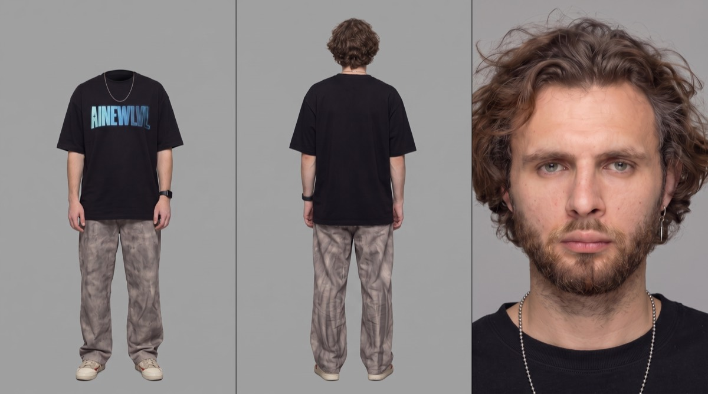

Кухня
в замедлении
Двадцать секунд slow-motion боевика: кухня разлетается, зависшая в воздухе мука, гильзы, вспышки — и твоё лицо посреди всего этого, спокойное. Движение и камера берутся с карты глубины, внешность — с карты героя. Внутри полный рабочий файл: подготовка, промпт, музыка и что делать, когда поплывёт.

Срезать леттербокс
В карту глубины запечены чёрные полосы сверху и снизу. Беда в том, что в депте они вышли светлыми, а светлое для модели означает «очень близко к камере». Не срежешь — получишь белую стену поперёк кадра вместо кухни.
ffmpeg -i ~/Desktop/"КУРС НЕЙРОКРЕАТОР/Timeline 1.mp4" -vf "crop=1920:800:0:140" -c:v libx264 -crf 16 -an ~/Desktop/depth_full.mp4 -y
- Разрежь карту героя на три отдельных файла — фас, спина, портрет. Не подавай одной склейкой: лицо держится заметно лучше, когда панели идут по отдельности. Лимит референсов в Seedance 2.5 — пятьдесят, места хватает с запасом.
- Длительность не режь. 20.5 секунды укладывается в лимит модели.
Промпт
Вставляй как есть. Входы: обрезанная карта глубины плюс три картинки героя. Обрати внимание на две вещи внутри — прямой запрет рендерить серые тона самой депт-карты и NON-IP: охранники намеренно описаны как обезличенные, чтобы модель не потянула лица из фильма-источника.
@depth: depth_full.mp4 — grayscale depth-map pass, near surfaces bright, far surfaces dark. Use it strictly as the geometry and camera source: it defines where every body, limb, prop and surface sits in Z, the framing of each beat, and the exact camera position and camera motion throughout. Do not render the gray tones themselves. Do not treat it as style, colour, lighting, texture or wardrobe. Ignore any flat light horizontal band at the top or bottom edge — that is letterbox, not geometry, and no wall or surface exists there. @hero: character reference — man, about 30, mid-length wavy dark-blond hair, thick reddish-blond full beard and moustache, grey-blue eyes, silver hoop earring in the left ear, silver ball-chain necklace, black oversized T-shirt with a blue gradient AINEWLVL chest print, grey-beige marbled wide-leg trousers, white low sneakers, black smartwatch on the left wrist. Identity, face, hair, beard and wardrobe reference only. Ignore the reference's flat grey studio background and its shadowless studio light entirely — he must be lit by the scene. Photoreal. 16:9. 20.5s. Cold steel-blue desaturated cinema grade, heavy slow motion, anamorphic, fine film grain, cool overhead fluorescent key with blue daylight fill. NON-IP — generic anonymous security guards, generic wardrobe, no resemblance to any existing film character. SFX only. One continuous take inside a commercial kitchen mid-catastrophe: white subway tile, stainless steel counters, overhead fluorescents, everything suspended in extreme slow motion — flour hanging as a fine white cloud, water beads holding in the air, cutlery, spent brass, shattered crockery and food debris frozen mid-flight. Camera position, framing and motion taken exactly from the depth pass at every beat. It opens on the guard. Medium shot, centre frame, a generic uniformed security guard — white short-sleeve shirt, black tie, dark peaked cap, badge on the sleeve — both arms punched straight toward the lens in the exact pose the depth pass describes, hands locked at the wrists around a pistol, firing at camera. Muzzle flash blooms and hangs. Brass tumbles slowly out of frame. Two more blurred generic guards hold the left and right edges where the depth pass places them, out of focus. Knives, a cleaver, vegetable batons and plastic bottles drift through the air around him. At about 3.3 seconds the framing changes to a tight chest-up on the hero from @hero, filling frame exactly as the depth pass places his head and shoulders — his face, his beard, his hair, his black AINEWLVL T-shirt, the ball chain on his collarbone. He is calm inside the chaos, unhurried, eyes level, jaw set, breath barely moving his chest, debris drifting past his cheek. His right hand rises into the upper right of frame precisely where the depth pass puts it, one finger extended. Micro-motion only: a slow blink, hair strands drifting, the chain shifting a millimetre. At about 7 seconds it opens to a wide of the kitchen, two guards' backs to camera in the foreground, the room shredding in slow motion behind them — trays lifting off the counters, plates separating in the air, a pan of food climbing away from a burner. At about 11.5 seconds the camera pans right across three guards firing toward the lens, muzzle flashes suspended, stacked crockery and bottles frozen on the counters, a wall of glass sheeting apart at the right of frame. At about 18.7 seconds it returns to a tight shot of the hero from @hero, moving between the guards, his left arm raised and bent up beside his head exactly as the depth pass describes, hand near his temple, still unhurried, eyes forward. A guard's shoulder and a suspended cloud of debris fill the right edge. Cold overhead fluorescent key from above and slightly screen-left, cool blue window fill from screen-right, soft-edged shadows under the brow and the beard, cool skylight bounce on the forehead and cheekbones. The hero carries the same haze, depth of field, grain and anamorphic falloff as the rest of the frame — never crisper than the room, no cut-out edge, no rim halo. Face and identity exactly as @hero, unchanged in both his beats; geometry, blocking, framing and camera exactly as @depth. SFX only: a deep low-frequency slow-motion drone, stretched dull gunshot concussions, suspended metal-on-metal ticks from tumbling cutlery and brass, a soft granular hiss of drifting flour, glass separating in slow sheets, faint fluorescent hum.
Музыка
В видеопромпте стоит SFX only — модель отдаёт только звук сцены, поэтому музыка кладётся отдельным слоем и не конфликтует. Приём здесь простой и очень рабочий: чем нежнее музыка, тем страшнее хаос.
Instrumental. Delicate fingerpicked nylon-string guitar, slow arpeggios, one sustained cello note underneath, sparse felt piano, no drums for the first half. Warm, tender, nostalgic — almost a lullaby. Tempo 68 BPM, key A minor. Recorded close and dry, room tone audible, tape warmth, no reverb wash. Ends unresolved on a suspended chord.
[Intro — 0:00] solo fingerpicked guitar, single voice, very quiet [0:03] one low cello note enters and holds [0:07] felt piano adds a slow four-note figure, guitar keeps arpeggiating [0:11] soft brushed snare and upright bass enter, gentle pulse, still tender [0:18] everything drops away except the guitar [0:20] final suspended chord, unresolved, let it ring [End]
Instrumental cinematic score. Deep sub-bass drone, reversed piano swells, granular metallic textures, a slow taiko pulse entering halfway, cold analog synth pad. Tension building, no melody, no drop. Tempo 70 BPM, minor. Wide stereo, heavy low end, dry percussive transients over a hazy tail.
Instrumental. Dark trap-cinematic hybrid, 808 sub bass, sparse triplet hi-hats entering at 0:11, detuned bell melody, vinyl crackle, cold and confident, not aggressive. Tempo 140 BPM half-time feel, key F minor. Clean modern mix, punchy transients, space around the low end.
- Проси 30 секунд. Точный короткий хронометраж генераторы не отдают — режь под 20.5 уже на монтаже.
- Ставь флаг Instrumental. Иначе влезет вокал и убьёт слой SFX.
- Не упоминай фильм-источник и его саундтрек. Генератор потянет к узнаваемой мелодии, и трек станет непригоден для коммерции.
- В Higgsfield бери вариант A, но убери таймкодовую разбивку — этот инструмент её игнорирует.
Если поплыло
Первый прогон смотри только в двух местах: лицо на 3.3 секунде и на 18.7. Это должен быть один и тот же человек. Всё остальное вторично — если лицо держится, сцена собралась.
@depth: output must be full-colour photoreal footage, never grayscale ▶
▶
Хочешь снимать такое на заказ?
Здесь всё держится не на промпте, а на решениях: срезать леттербокс, разрезать лист на три файла, поставить SFX only. Такие вещи не гуглятся — их показывают. На обучении даю систему целиком: от первой генерации до портфолио и первых заказов. Приходи на экскурсию — покажу платформу изнутри и работы учеников, разберу твою ситуацию. Ничего продавать не буду.
Записаться на экскурсию → Бесплатно · созвон 30–40 минут · места ограничены